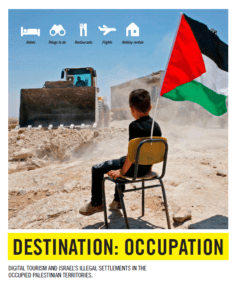

参加“以色列沙漠露营项目”，每晚最高只需235美元“体验沙漠的静谧，并感受以色列人的热情好客”——游客在计划行程时，很容易被热门旅游预订网站提供的这类信息所吸引。但许多游客不知道，这数以百计的房源及活动信息，在东耶路撒冷等巴勒斯坦被占领区的以色列定居点中，助长了针对巴勒斯坦人的人权侵犯行径。
在新报告《目的地：占领区》（Destination: Occupation）中，国际特赦组织记录了网上旅游预订巨头爱彼迎（Airbnb）、缤客（booking.com）、Expedia及猫途鹰（TripAdvisor）如何带动非法定居点内的旅游业发展，继而助长了这些定居点的存在与扩张。

以色列当局将以色列平民移居至巴勒斯坦被占领土的做法违反了国际人道法，构成了战争罪。尽管如此，上述4家公司却继续在定居点内经营商业活动，并从这一非法情势中牟利。
报告中记录了卡法阿杜米姆（Kfar Adumim）定居点，这是一个迅速发展的旅游枢纽，距离贝都因人（Bedouin）聚居的汗艾哈迈尔村（Khan al-Ahmar）不到两公里，以色列最高法院已经允许立即并完全拆除该村。卡法阿杜米姆及周围其他定居点的扩张，是导致当地贝都因人社区遭受人权侵犯的关键因素。
国际特赦组织全球议题主任西玛·乔希（Seema Joshi）指出：“以色列非法占领巴勒斯坦领土及非法扩张定居点的做法，令巴勒斯坦人承受持续不断的痛苦，迫使他们流离失所，摧毁了他们的生计并剥夺了他们饮用水等生活必需品。爱彼迎、缤客、Expedia及猫途鹰以分享与互信的理念标榜自己，却在定居点内经营商业活动，助长了人权侵犯行径。”
西玛·乔希 爱彼迎、缤客、Expedia及猫途鹰以分享与互信的理念标榜自己，却在定居点内经营，助长人权侵犯行径。
“以色列政府利用定居点推动旅游产业发展，作为维持和扩张这些定居点的理由，而这些网上旅游预订公司则迎合这一计划。这些公司是时候挺身捍卫人权，将所有在被占领土定居点内的房源全部下架。战争罪发生地并非旅游景点。”
爱彼迎的政策
2018年11月，在半岛电视台（Al Jazeera）和人权观察（Human Rights Watch）发布调查报告后，爱彼迎承诺下架所有在约旦河西岸地区定居点内的房源。然而，该公司却未将这一承诺延伸至被占领的东耶路撒冷。在这片被占领土的定居点内，爱彼迎拥有逾百个网上预订房源。国际特赦组织呼吁爱彼迎履行承诺，将东耶路撒冷等被占领土定居点内的全部房源下架。此外，缤客、Expedia及猫途鹰也应将巴勒斯坦被占领土上的全部房源下架。
根据《联合国工商业与人权指导原则》（Guiding Principles on Business and Human Rights），企业无论在何处营运，均有责任遵守国际人道主义及国际人权法。这4家企业如不将定居点的房源下架，它们在巴勒斯坦被占领土上的活动皆违背了这些责任及公司自身的标准。
发展定居点内的业务
报告中的4家企业在东耶路撒冷等定居点内都有房源。在报告撰写之时，在巴勒斯坦被占领土的定居点内：
• 总部位于美国的爱彼迎有逾300个房源。
• 总部位于美国的猫途鹰列出了逾70个不同的旅游景点、线路、餐厅、咖啡店、旅馆及出租屋。
• 总部位于荷兰的缤客列出了45家旅馆及出租屋。
• 总部位于美国的Expedia列出了9家住宿提供商，当中包括4间大型旅馆。
从人权侵犯中牟利
2018年2月至10月间，国际特赦组织探访了临近以色列定居点的4条巴勒斯坦村庄，以及东耶路撒冷的塞勒瓦（Silwan）社区和希伯伦的一个巴勒斯坦社区，这些地区均与定居者利用来赚取颇丰利润的旅游景点相距不远。
居于定居点旁的巴勒斯坦农民 到这儿来的游客被洗脑了，被骗了，不知道这是我们的土地。

国际特赦组织发现，爱彼迎、缤客、Expedia及猫途鹰不仅在推动非法定居点的旅游业发展方面扮演了举足轻重的角色，同时亦没有贯彻的显示房源位于以色列定居点，从而误导消费者。
“到这儿来的游客被洗脑了，被骗了，不知道这是我们的土地，”一名居住在希洛(Shiloh)定居点旁的巴勒斯坦农民如是说，以色列政府出资在那儿修建了一座大型的游客中心，吸引观光者参观古迹。
这两个邻近希洛的巴勒斯坦村庄自20世纪90年代末以来已经失去了逾5,500公顷（55平方公里）土地，许多人都搬走了，留守者称，他们常常受到持械定居者的袭击。爱彼迎、缤客及猫途鹰均有位于希洛的房源上架，但仅缤客注明了房源位于以色列定居点内。
近来年，以色列政府投入大量资金，发展定居点内的旅游业。当局将一些地区指定为观光景点，为自己掠夺巴勒斯坦人土地和家园的行为开脱，更特意将定居点建于遗址旁，以凸显犹太人和该地区的历史关联。
国际特赦组织的报告重点提到以色列政府如何允许并鼓励定居者开发属于巴勒斯坦人的土地和自然资源，而爱彼迎、缤客、Expedia及猫途鹰公司又是如何从中获利的。
西玛·乔希评论道：“这些公司让游客进入自然保护区，鼓励他们去远足、去沙漠探险，并吸引游客品尝产自当地葡萄园的美酒。”
“这些皆是从巴勒斯坦人那里非法攫取的自然资源，但只有定居者和同定居者进行商业合作的网上旅游预订公司获利。”
体验战争罪
国际特赦组织记录了游客在定居点内的体验，以及在同一地方内的巴勒斯坦人日常所遭受的人权侵犯，二者之间有天渊之别。
爱彼迎、缤客、Expedia及猫途鹰都有提供由卡法阿杜米姆定居点内或附近的定居者所经营的度假屋以及沙漠露营“体验”项目。约180名卡法阿杜米姆居民有可能被以色列军队强行驱逐，以便为区域内定居点的非法扩张腾出地方，以色列这种在占领区内强制转移人口的行为构成了战争罪。当局只为村民提供了两个搬迁地点：耶路撒冷之前的垃圾倾倒场旁，临近阿布迪斯村（Abu Dis），以及临近杰里科市（Jericho）的污水处理场旁。
西玛·乔希 这些公司从卡法阿杜米姆旅游业中赚取的一分一毫都是来自人权侵犯。定居者利用当地文化吸引游客更是雪上加霜。
爱彼迎、缤客及Expedia所推销的“以色列沙漠露营项目”让游客以每晚最高235美元的价钱，“体验沙漠的静谧，并感受以色列人的热情好客。” 猫途鹰亦列出了国家公园、博物馆及沙漠旅游线路，另外还有一个位于卡法阿杜米姆附近以圣经为主题的景点。
西玛·乔希表示：“它们所提供的露营体验是在贝都因人曾用于放牧的土地上。随着卡法阿杜米姆定居点扩张，许多贝都因牧民已失去了自己的生计，现在要靠人道主义援助生活。”
“这些公司从卡法阿杜米姆旅游业中赚取的一分一毫都是来自人权侵犯行径。定居者利用贝都因文化吸引游客的做法实属雪上加霜。”
与定居点的扩张密不可分
国际特赦组织亦探访了库尔贝特·苏西亚村（Khirbet Susiya），那儿的巴勒斯坦居民从大部分地区被强行驱逐，以便为邻近的苏萨（Susya）定居点的扩张腾出地方，之后就住在临时庇护所中。以色列当局禁止在当地修建蓄水池和水井， 2015年联合国估计，村民约三分之一的收入用于买水。

苏萨建于一座古迹的遗址周围，截至报告撰写时，爱彼迎和猫途鹰均列出了这一古迹及游客可以观光的景点照片，包括遗址、橄榄种植园、酿酒厂和葡萄园，此外定居点内还有一个大型游泳池。
以色列政府在诸如苏萨和希洛等定居点内开发古迹，对其发展和扩张定居点的计划至关重要。
西玛·乔希表示：“向全世界推销这些景点有利于以色列政府实现其殖民目标，国际旅游公司在其中起着举足轻重的作用。”
“苏萨的古迹和其他在定居点内或附近的旅游景点一样，助长了针对邻近巴勒斯坦人的人权侵犯行为。网上旅游预订公司推销这些景点，与以色列政府不惜一切代价地非法扩张定居点的行为沆瀣一气。”
亟需立法
从非法定居点中获利并助长非法定居点的并非仅有旅游业，尽管全球大多数国家都公开谴责以色列建立定居点违反了国际法，但这些定居点内生产的商品每年仍然出口海外，价值数以亿计英镑。
国际特赦组织除了呼吁各间公司停止在定居点内及同定居点合作做生意外，亦呼吁各国政府对此做出强制性规定，并制定法律禁止进口定居点生产的商品。
西玛·乔希表示：“仅仅谴责定居点为非法，却又同时允许让其有利可图的商业活动继续，这是远远不够的。”
爱尔兰议会现正审批一项法案，禁止与定居点进行商品和服务的贸易，国际特赦组织呼吁其他国家效仿爱尔兰。
公司回应
国际特赦组织在发布报告前致函4家公司，向它们提供机会回应报告的调查结果。缤客和Expedia做出了回应，但爱彼迎和猫途鹰未有回应。
国际特赦组织仔细检视了公司的回应，并在更新报告调查结果时充分考虑了它们所提供的信息。有关的公司回应见于报告的附件部分。